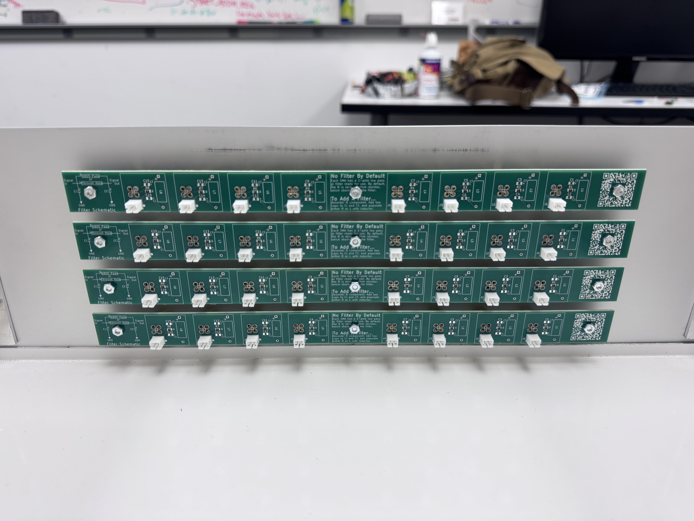
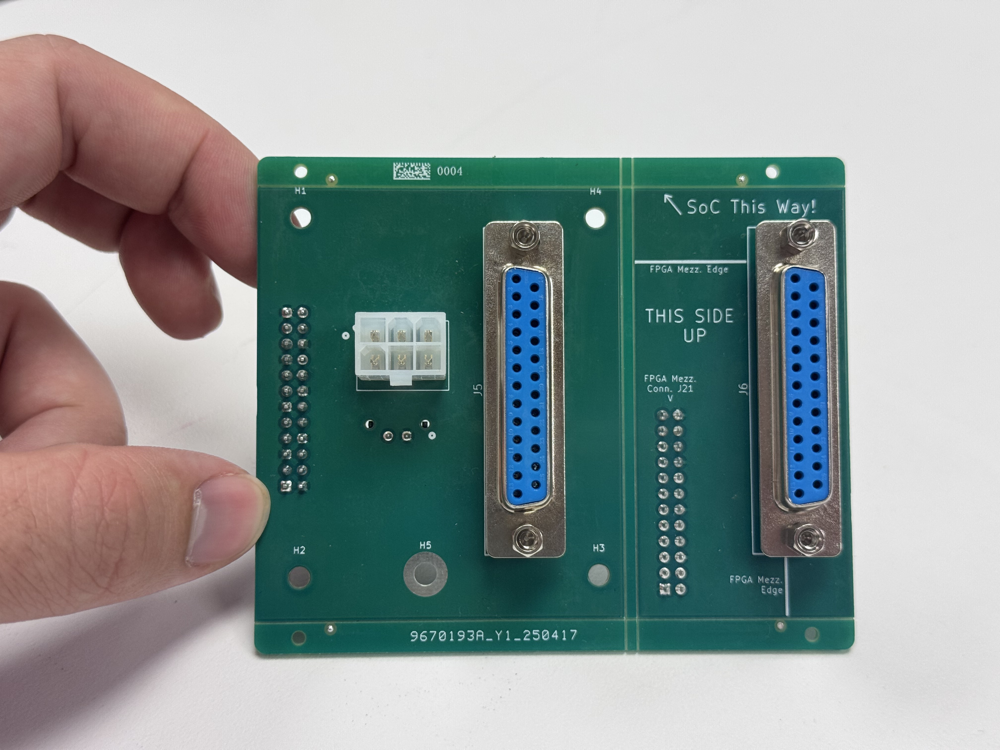
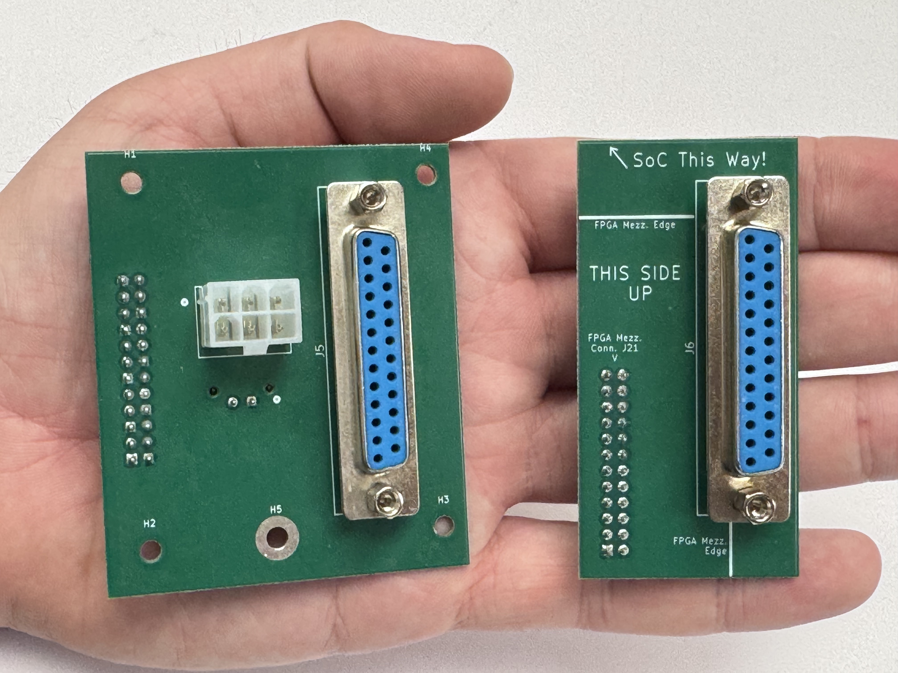

Assembly
This page will walk a user through the process of assembling their own QUACK box. First, they should have acquired all materials needed to assemble the unit. See the Quack Start page for more information.
Preparation
Before assembly begins, some preparatory steps should be taken to get the stock components ready for assembly. should be done on the ordered parts broke into the three sections below:
Ribbon Cables
There are two styles of ribbon cable that must be assembled, and they are worth calling out separately. Please be careful with this step—if not assembled correctly, the system can be shorted.
3 Daisychain Cables
Cut 3 strips of the ribbon cable into 5-7 inch pieces. Then, crimp the connectors to the end exactly as shown in the image below, paying careful attention to which side the tab is on.
1 FPGA-in Cable
The FPGA-In cable is constructed in a fundamentally different way. In our setup, we used a 12-24 inch strip of cable. Pay careful attention to the orientation of the connector and tab.
Using a significantly longer length helps differentiate between the daisychain cables and the FPGA-In cable. It may also be helpful to physically mark them with a Sharpie in some distinctive way.
Enclosure Back Panel
In order to attach the support panel to the enclosure’s stock back panel, some modifications must be made in the stock panel. Specifically, M3 mounting holes must be drilled, aligning with the support panel’s corner holes. This allows the support panel to mount onto the stock back panel, but doesn’t leave any room between the two metal planes for the Coupling PCB to sit. So, using either a hole-saw, laser cutter, water jet, or (in our case) a metal hole punch, clear a Coupling PCB-sized hole into the stock panel.
We found it most effective to use the actual support panel and Coupling PCB, alongside a Sharpie, to mark where the mounting holes should be drilled and the panel should be knocked out. The horizontal alignment of the support panel on the stock back panel doesn’t particularly matter, though somewhere in the middle is best.
Electronics Defect Testing
Our experience with JLCPCB has shown that manufacturing defects can sometimes occur. Before assembly, we recommend testing the following elements of the electronics:
These tests do not guarantee functionality, but they should at least ensure that nothing shorts, melts, or blows up due to being plugged in.
V-Cut Snapping
The Output and Coupling boards come as panels. In order to separate these panels, we have put “V-Cuts” along the lines where we want to separate the unused portions from the final use portions. V-Cuts are weak points which are intended to be cleanly snapped in two.
Using your hands or a pair of pliers, carefully snap the V-Cut lines of the output board until they appear as shown below (note that they are pictured in a full assembly, focus on the shape of the 4 boards):

Similarly, the coupling board comes in a panel, but with two portions intended for use. The left portion is intended to be mounted to the custom support panel on the back of the enclosure. The right portion is a helpful adapter, allowing someone to use a D-Sub 25 connector to hook straight up to the FPGA’s GPIO.


DAC Soldering
The CN0531 DACs come ready to use out of the box, but have some optional features that can be enabled. These features can be enabled by soldering a jumper pad on the back of the CN0531 cards. Specifically, our system requires following feature:
- LDAC. Bridge/connect P14.
This feature allows for the DACs to receive a new data transmission without actually updating the DAC output yet. Thus, multiple DACs can asynchronously receive the data transmissions for their next value, but all update synchronously with a pulse of LDAC.
Researchers may, however, also make use of the following two features. They are not yet built for native support on the qick-quack package, but are described in brief detail below. See the AD5791 datasheet available here for more information on these signals.
- CLR. Bridge/Connect P15. Not built into qick-quack.
CLR control is not built into the qick-quack package. However, a researcher may find that it comes in handy. The DACs have a CLR register, and pulsing the CLR line will set a DAC’s output to this CLR value. In this way, the entire system can set to a known state without having to manually send all 32 of these clear messages. Sending a custom SPI message in Mode 3 (config mode) could allow a user to experiment with this feature.
- RESET. Bridge/Connect P16. Not built into qick-quack.
RESET control is not built into the qick-quack package, but can be accessed in Mode 3 (config mode). This feature may be similarly useful to researchers. Pulsing this line low resets the entire DAC setup to it’s power-on status. Note that, after use, all DACs will need to be reconfigured.
Final Assembly
With everything in hand, your total set of materials should look something like this:
Enclosure
Lets focus in on the enclosure itself. Set aside the stock front panel—you won’t need it—and substitute in the custom front panel.
Step 1: Front and Sides
Begin with assembling the front panel to the side panels, using the stainless steel flanges and stock enclosure screws. The instruction manual that came with the enclosure may be helpful here—we follow the same process.
Step 2: Bottom
Rest the bottom panel inside the frame that you have built, then attach the two screws towards the front. Do not attach the screws in the middle yet. These two screws are the same as are used in the stock enclosure assembly.
Step 3: Back Panel
First, the Coupling PCB should be attached onto the Support panel. This requires the longer 16.00mm M3 screws, M3 nuts, and the longer 5.20mm nylon spacers (MNI-4-10).
Next, attach the support board to the modified back panel using the same M3 long 16.00mm screws and nuts.
Finally, attach the back panel to the rest of the enclosure using two of the stock enclosure small screws, and two stock larger screws with nuts. Again, see the manual that came along with the stock enclosure for more on this—we followed the same process.
Step 4: Output PCB Attachment
Make sure you have collected the above materials – 4 output boards, 12 long 16.00mm M3 screws and matching nuts, and 16 long 5.20mm nylon spacers (MNI-4-10). Assemble onto the front panel as shown below.
Finished Enclosure
Note that after completing steps 1-4 above, the enclosure should be assembled. It is missing the top panel—leave it off while you complete the following steps. Further, make sure that you still have not assembled the two screws that go into the middle of the side panels, into the bottom panel. Here, we have replaced the stock enclosure short screws with 16.00mm long M3 screws and nuts. These will be used to help attach the input board stack-up to the enclosure securely.